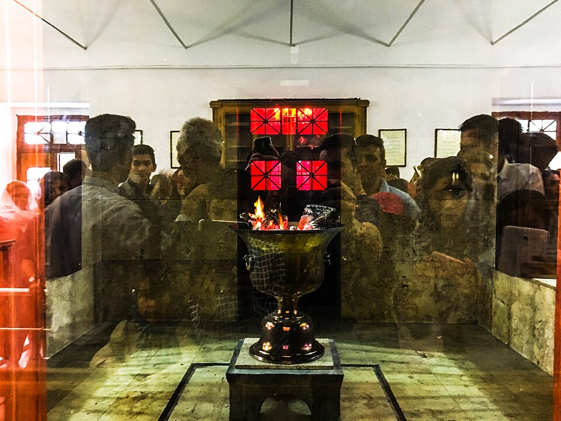
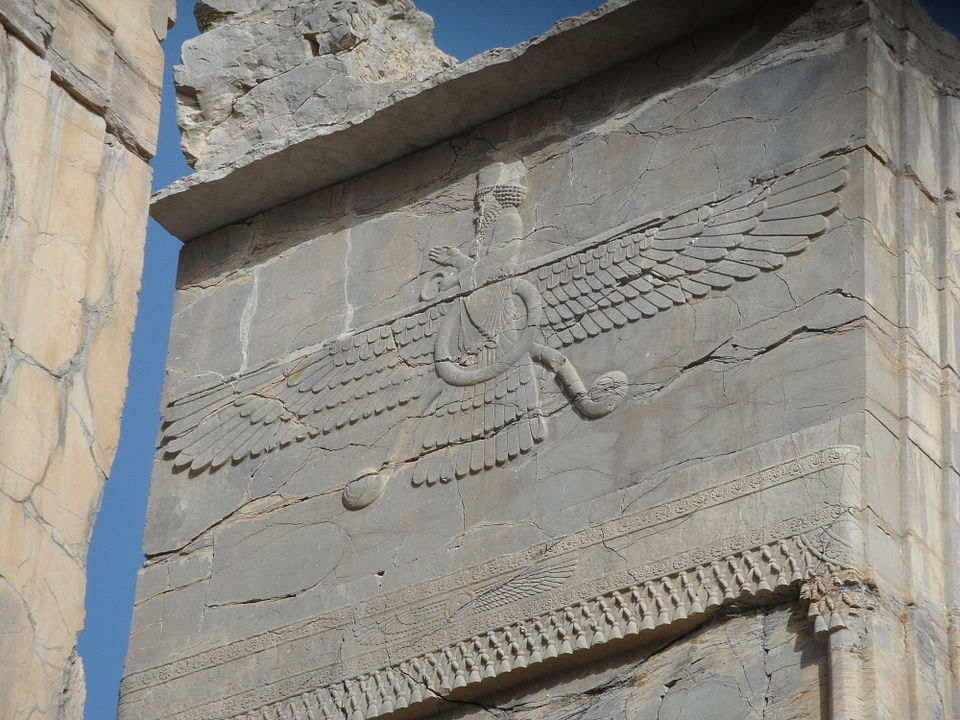
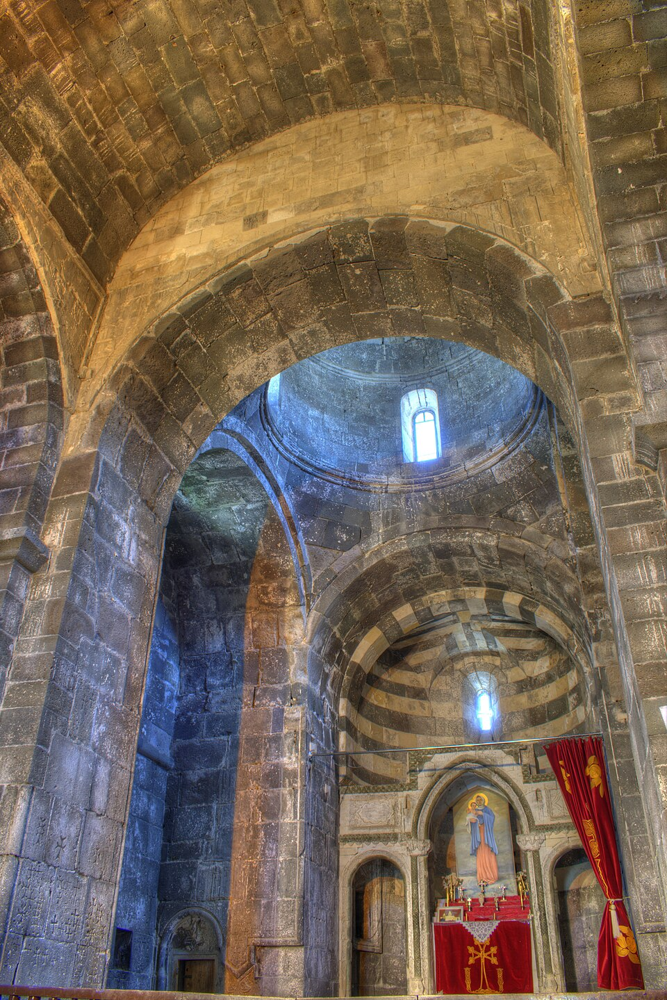
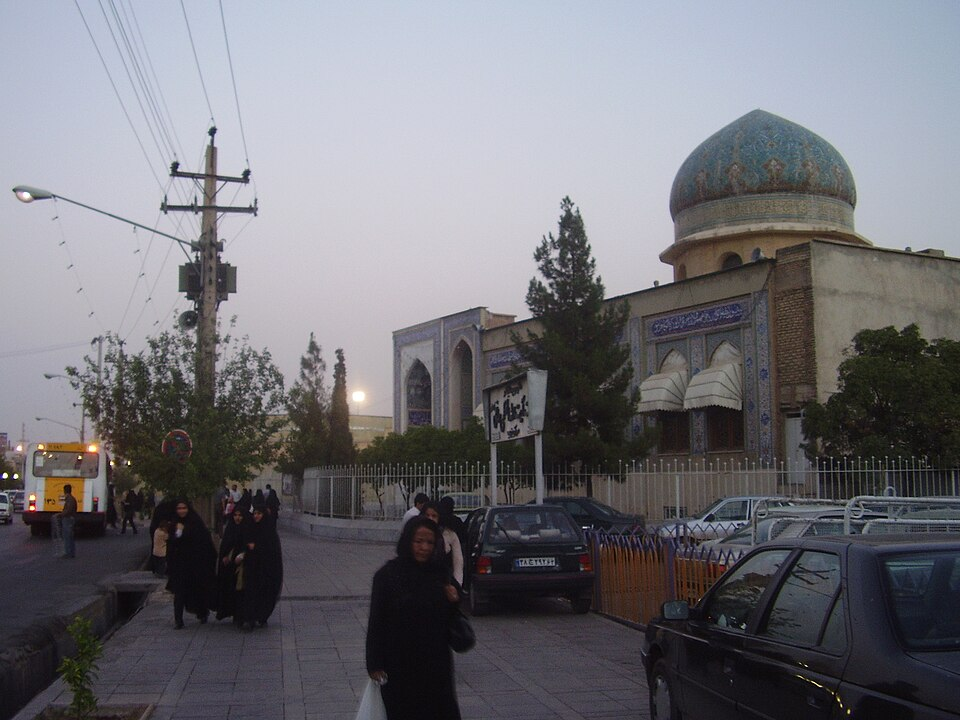

سرزمینی که مدام خدایانش را عوض میکرد
آتشی که از همهچیز بیشتر دوام آورد

شبِ آخرین سهشنبهٔ پیش از سالِ نوِ ایرانی، خانوادهها در سراسر ایران هنوز توی کوچه از روی آتشهای کوچک میپرند. به این جشن میگویند چهارشنبهسوری، و خودِ سالِ نو نوروز است (یعنی «روزِ نو»). بخشِ عجیبش این است: بیشترِ کسانی که از روی آن شعلهها میپرند مسلماناند و دارند کاری میکنند که بیش از هزار سال از اسلام کهنتر است. آتش، همان آتش، تهماندهای از دنیایی بسیار کهنترِ ایرانی است که درون دنیایی تازهتر زنده مانده.
همین یک تصویر، کلِ داستانِ دین در ایران است. این سرزمینی است که بارها و بارها خدایانش را عوض کرد و با این همه هرگز کهنهها را بهتمامی دور نینداخت. برای فهمیدنش باید این فکر را کنار بگذاری که یک دین بهسادگی جای دینِ پیش را «گرفت»، مثلِ عوضکردنِ باتری. آنچه واقعاً رخ داد آشفتهتر و کندتر و بسیار جذابتر است.
پیش از آنکه اصلاً اسمی روی این چیزها باشد

خیلی پیش از آنکه کسی واژهٔ «ایران» را بنویسد، مردمِ فلاتِ ایران خدایانِ بسیاری را میپرستیدند. کمی از آنها را از کهنترین لایههای متونِ مقدس میدانیم و از مقایسه با خدایانِ هندِ باستان، که خویشاوندانِ نزدیکشان بودند. مهر بود (مِهر)، پیوسته به خورشید و نور و نگهداشتنِ پیمان؛ برای همین است که امروز در فارسی مهر میتواند یعنی مهربانی یا عشق. موجوداتِ نیرومندِ دیگری هم بودند، بعضی یاریرسان، بعضی ترسناک.
همین اول باید روراست باشیم که اینجا چقدر نمیدانیم. مردمِ عادی تقریباً هیچ نشانهای از اینکه بهراستی به چه باور داشتند یا برای چه دعا میکردند بر جای نگذاشتند. شاهان لافشان را بر صخرهها کندند؛ کشاورزان و چوپانان چیزی نکندند. پس وقتی از «باورِ ایرانیانِ باستان» حرف میزنیم، بیشتر داریم از چیزی حرف میزنیم که موبدان و فرمانروایان میخواستند نگه داشته شود، و این همان چیزی نیست که مردم باور داشتند.
پیامبری که هیچکس نمیتواند تاریخش را بگوید

بعد مردی میآید به نام زرتشت، که در غرب بیشتر زوروآستر میشناسندش. او آموخت که بالای همهٔ خدایان یک آفرینندهٔ دانا ایستاده، اهورامزدا («سرورِ دانا»)، گرفتار در نبردی دراز با نیرویِ دروغ و بینظمی. آدمها در این نبرد کاری واقعی بر عهده داشتند: برگزیدنِ اندیشهٔ نیک، گفتارِ نیک، کردارِ نیک. آتش نمادِ بزرگِ آن نظمِ پاک شد، و برای همین است که آتشکدههای زرتشتی شعلهای را روشن نگه میدارند. شعلهای، توجه کن، که گرامیاش میدارند، نه خدایی که بپرستندش. «آتشپرست» خواندنشان دشنامی است از زبانِ دشمنانشان، نه توصیفِ کاری که میکنند.
حالا معمای راستین، که معمای بزرگی است: نمیدانیم زرتشت کِی زیست. این از آن چیزها نیست که کسی یادش رفته باشد در بیاوردش. بحثی واقعی میان پژوهشگرانِ جدی است. یک سنت او را حدود ۶۰۰ پیش از میلاد میگذارد، «۲۵۸ سال پیش از اسکندر». اما زبانِ کهنترین سرودها، یعنی گاهان، چنان باستانی مینماید که بسیاری از متخصصها او را خیلی عقبتر میبرند، جایی میان ۱۵۰۰ تا ۱۰۰۰ پیش از میلاد. این شکافی نزدیک به هزار سال است. نمیتوانیم ببندیمش. هر کس تاریخی یگانه و قاطع برای زرتشت کفِ دستت بگذارد، دارد حدس میزند و نمیگوید که دارد حدس میزند.
اما کاری که شاهان کردند از باورشان جذابتر است. وقتی کوروش در ۵۳۹ پیش از میلاد بابِل را گرفت، گذاشت مردمانِ اسیر و خدایانشان به خانه برگردند. در میانشان یهودیانی بودند که از اورشلیم تبعید شده بودند. برای همین است که کتابِ مقدسِ عبری کوروش را به گرمی به یاد میآورد. اما حواست باشد: کوروش مدارای دینی را بهمنزلهٔ یک اصل اختراع نمیکرد. اجازهٔ بازگشاییِ پرستشگاههای محلی، مدیریتِ هوشمندانهٔ امپراتوری بود، همان شیوهٔ معمولِ یک فاتحِ زیرک. نتیجه به سودِ یهودیان بود؛ انگیزه قدرت بود.
جامعهٔ یهودی که ماند

این هم چیزی که بیشترِ مردم هرگز نمیشنوند: وقتی کوروش گذاشت تبعیدیها به خانه برگردند، بسیاری از آنها برنگشتند. در دنیای ایرانی برای خودشان زندگی ساخته بودند و ماندند. همان تصمیم، یکی از کهنترین جامعههای پیوستهٔ یهودی روی زمین را پایه گذاشت، که نزدیک ۲۵۰۰ سال روی خاکِ ایران زیست، درست از میانِ هر دگرگونیِ دینی که پس از آن آمد. هنوز هم در ایران یهودی هست.
این جامعه برای کلِ یهودیت کارِ بزرگی کرد. قرنها بعد، زیر امپراتوریِ ایرانیِ ساسانی، عالمانِ یهودی در حوزههای بزرگ (در شهرهایی مثل سورا و پومبدیتا، در سرزمینی که امروز عراق است اما آن زمان خاکِ ایران بود) تلمودِ بابلی را گرد آوردند، که تقریباً حوالی ۵۰۰ تا ۶۰۰ میلادی پایان یافت. این متن برای پانزده قرنِ بعد متنِ مرکزیِ قانون و دانشِ یهودی شد. یکی از مهمترین کتابهای کلِ یهودیت زیر حکومتِ ایران گرد آمد.
زیارتگاهی که اینجا تصویرش هست به نامِ قهرمانانِ کتابِ استر است، داستانی که در دربارِ ایران در شوش میگذرد. و اینجا تاریخدان باید روراست باشد: بیشترِ پژوهشگران استر را نه دفترِ خاطراتِ رویدادهایی واقعی، بلکه نوعی داستانِ تاریخی میخوانند، حکایتی گیرا که روی زمینهای ایرانی ساخته شده و تا اندازهای برای توضیحِ جشنِ پوریم نوشته شده. آن بنا در همدان جایی مقدس و دوستداشتنی و واقعی است؛ اینکه آیا خودِ استر و مردخای زیستهاند پرسشِ جداگانهای است، و پاسخِ محتاطانه این است که «نمیدانیم». یک زیارتگاه میتواند کاملاً واقعی باشد حتی وقتی داستانِ پشتش بیشتر افسانه است. هر دو با هم درستاند.
وقتی یک دین حکومت میشود

قرنها بعد، دودمانی تازهٔ ایرانی، ساسانیان (از ۲۲۴ میلادی)، کاری کردند که شاهانِ پیشین نکرده بودند: آیین زرتشتی را محکم به حکومت گره زدند، تقریباً مثلِ یک کلیسای رسمی. یکی از مردانی را که این کار را پیش بُرد میتوانیم بهراستی بشنویم، موبدی نیرومند به نام کرتیر، چون خودش کتیبههایی به جا گذاشت و در آنها به این کار میبالید. لاف میزند که آتشها و موبدان را نیرو بخشیده، و به یهودیان و مسیحیان و بوداییان و هندوها و دیگران ضربه زده. این چیزِ نادری است: سخنانِ خودِ یک موبد که به ما میگوید زورِ امپراتوری را علیه دینهای رقیب به کار بسته. با این همه، مسیحیت در همین سدههای نخست در ایران ریشه دواند و هرگز نرفت.
این دوران، دورانِ دو چالشگرِ گستاخ هم بود. مردی به نام مانی (زادهٔ حدود ۲۱۶ میلادی) دینی کاملاً تازه بنا کرد، مانویت، که اندیشههایی از زرتشتیگری و مسیحیت و فراتر از آنها را در یک تصویرِ واحد در هم آمیخت: نوری که در تاریکی به دام افتاده. این دین بهطرزی شگفتآور دور رفت، تا دنیای روم و بعدها چین. حکومتِ ساسانی سرانجام علیه او چرخید و مانی حدود ۲۷۴ میلادی در زندان مُرد. بعدتر، اصلاحگری به نام مزدک چیزی موعظه کرد که تقریباً انقلابی به گوش میرسید، از جمله تقسیمِ برابرترِ ثروت؛ جنبشش در اوایلِ دههٔ ۵۰۰ میلادی سرکوب شد. اینجا هم باید یک احتیاط بیفزاییم: بیشترِ آنچه دربارهٔ مزدک «میدانیم» از زبانِ کسانی است که از او نفرت داشتند، پس تصویر شاید ناعادلانه باشد. درس باز هم تکرار میشود: اینکه چه کسی منبع را نوشته بهاندازهٔ خودِ حرفِ منبع مهم است.
فتحی که قرنها طول کشید
در دهههای ۶۳۰ و ۶۴۰ میلادی، ارتشهای مسلمانِ عرب در چند نبردِ سخت امپراتوریِ ساسانی را شکست دادند. امپراتوری زود فرو پاشید. این هم آن دامی که تقریباً هر کتابِ درسی در آن میافتد: بعد میگوید «و ایران مسلمان شد»، انگار آن دو با هم اتفاق افتادند.
نیفتادند. حکومت زود فرو ریخت؛ مردم آرامآرام دین عوض کردند. تاریخدان ریچارد بولیت، که الگوهای نامها و اسناد را بررسی کرده، استدلال میکند که بیشترِ ایرانیان تا قرنِ هشتم و نهم و حتی دیرتر مسلمان نشدند، نسلها پس از آنکه سربازان آمدند و رفتند. مدتهای دراز، زرتشتیان و مسیحیان و یهودیان بخشهای بزرگی از جمعیت را زیر حکومتِ مسلمانان تشکیل میدادند. فتح و دینگردانی روی دو ساعتِ کاملاً جدا پیش رفتند، و درهمریختنِ این دو، میلیونها آدمی را پاک میکند که قرنها دینِ کهنشان را نگه داشتند.
و دنیای کهن بهسادگی ناپدید نشد. زبانِ فارسی بازگشت، حالا به حروفِ عربی نوشتهشده، و داستانهای کهن را در شعرهایی مثلِ شاهنامهٔ فردوسی به جلو بُرد. نوروز جان به در بُرد. آتش روشن ماند، فقط در خانهای تازه.
سالی که ایران شیعه شد

اگر امروز از بیشترِ مردم بپرسی، میگویند ایران کشوری مسلمانِ شیعه است، انگار همیشه بوده. نبوده. در ۸۰۰ سالِ نخستِ اسلام، ایران بیشتر سنی بود، یعنی شاخهٔ بزرگترِ اسلام.
این با تصمیم تغییر کرد، نه با تقدیر. در ۱۵۰۱، فرمانروایی نوجوان به نام شاه اسماعیل دودمانِ صفوی را بنیاد نهاد و تشیّعِ دوازدهامامی را دینِ رسمی کرد، و بعد در صد سالِ بعد گسترشش داد، گاهی به زور. پس اکثریتِ شیعهٔ ایران تقریباً ۵۰۰ سال قدمت دارد، حاصلِ یک پروژهٔ سنجیدهٔ حکومتی. چیزی که دربارهٔ کشور بیزمان به نظر میرسد، در واقع یک تاریخِ آغاز و یک سیاست در پسِ خود دارد.
تازهترین دین، زادهشده در ایران

دین در ایران از شاخهزدن باز نایستاد. در قرنِ نوزدهم، در دورهٔ قاجار، جنبشی رشد کرد که به آیین بهائی تبدیل شد، آیینی که یگانگیِ همهٔ دینها را آموزش میدهد. با جوانی در شیراز آغاز شد، که به باب شناخته میشد، و خانهٔ او که در بالا دیده میشود یکی از مقدسترین جاهای این آیین شد. پیروانش امروز بزرگترین اقلیتِ دینیِ غیرمسلمان در ایراناند، و در عینِ حال از سختترین آزاردیدگان هم بودهاند، آن زمان و امروز. داستانشان یادآوری میکند که این تاریخ بهسلامتی «تمام» نشده؛ هنوز سرش بحث است و هنوز زیسته میشود.
چرا آتش هنوز مهم است
پس بشمار: خدایانِ کهنِ ایرانی، اهورامزدای زرتشت، مزداپرستیِ شاهان، مهر، نورِ مانی، امیدِ مزدک، یهودیت، مسیحیت، ورودِ آهستهٔ اسلامِ سنی، چرخشِ صفوی به تشیّع، و آیین بهائی. یک فلات همهٔ اینها را به تن کرد، و رَدِ هر کدام تا بعدی زنده ماند.
این شکلِ راستینِ دین در ایران است. نه پلکانی که هر دین جای دینِ پیش را بگیرد، بلکه بافتهای که رشتههای کهنه مدام از لای رشتههای نو خود را نشان میدهند. وقتی خانوادهات سرِ نوروز آتشی میافروزد، یکی از کهنترین رشتهها را در دست داری. لازم نیست به آنچه موبدانِ باستان باور داشتند باور بیاوری تا حس کنی چرا فکر میکردند آتش ارزشِ روشننگهداشتن دارد.
یادداشتی دربارهٔ اینکه اینها را از کجا میدانیم، و چه نمیدانیم
دو یادآوریِ صادقانه. اول، بزرگترین معمای حلنشدهٔ بالا واقعی است: هیچکس نمیتواند با قطعیت تاریخِ زرتشت را تعیین کند، و حدسها نزدیک هزار سال را در بر میگیرند. دوم، بیشترِ آنچه دربارهٔ باورهای باستان میگوییم از زبانِ شاهان و موبدان و دشمنان است، یعنی کسانی که میتوانستند بنویسند یا بکنند. مؤمنِ عادی، روستا، زنِ کنارِ آتشدان، بیشتر سکوت بر جای گذاشتند. وقتی جملههای قاطع دربارهٔ «باورِ ایرانیان» میخوانی، همیشه پرسشِ محبوبِ تاریخدان را بپرس: چه کسی این را به من میگوید، و او چه میخواست؟
منابع
اینها از همان جنس کارهایی است که تاریخدانان واقعاً به آن تکیه میکنند، تا بتوانی هر چه را بالا آمد وارسی کنی:
- دانشنامهٔ ایرانیکا (iranicaonline.org)، مدخلهای داوریشده، بهویژه «زرتشت» (دربارهٔ مناقشهٔ تاریخگذاری)، «دین هخامنشی»، «کرتیر»، «مانی»، «مزدک»، و «دینگردانی به اسلام».
- مری بویس، زرتشتیان: باورها و آیینهای دینی آنها، مقدمهٔ استاندارد، شاملِ استدلال برای زرتشتی بسیار کهن.
- پرودس اوکتور شِروو، روحِ زرتشتیگری، دربارهٔ متنها و مرزهای آنچه به ما میگویند.
- تورج دریایی، ایرانِ ساسانی: خیزش و فروپاشیِ یک امپراتوری، دربارهٔ حکومتِ ساسانی، کرتیر، مانی، و مزدک.
- ریچارد و. بولیت، دینگردانی به اسلام در دورهٔ میانه، استدلالِ کلاسیکِ اینکه دینگردانیِ ایران آهسته بود.
- آملی کورت، امپراتوری ایران (منابع در ترجمه)، و پیر بریان، از کوروش تا اسکندر، دربارهٔ هخامنشیان و کوروش در بابِل.
- مایکل اکسورتی، تاریخ ایران: امپراتوریِ ذهن، یک مرورِ خوشخوانِ تکجلدی (برای دیدنِ شکلِ کلی خوب است؛ جزئیات را در برابر ایرانیکا وارسی کن).